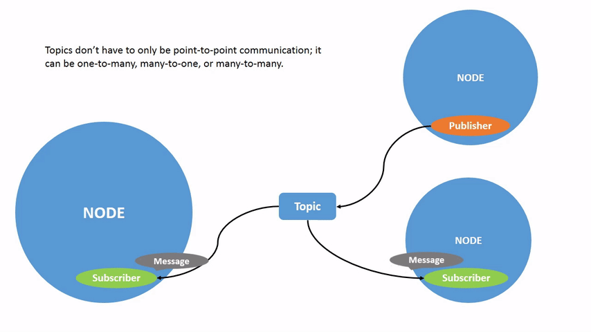
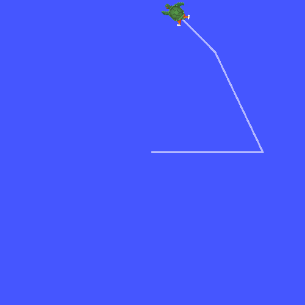
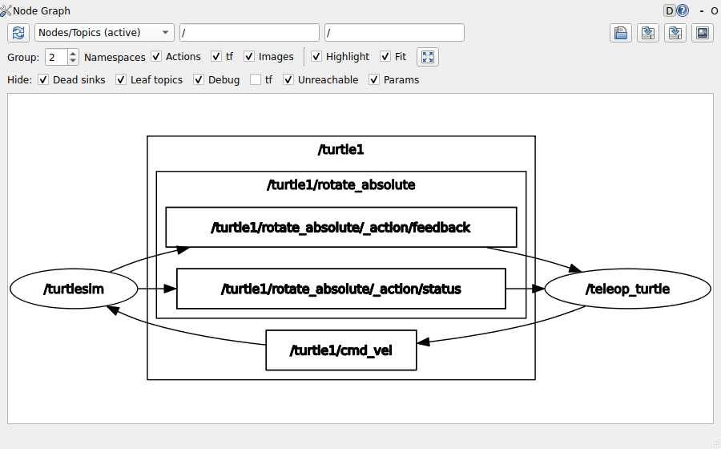
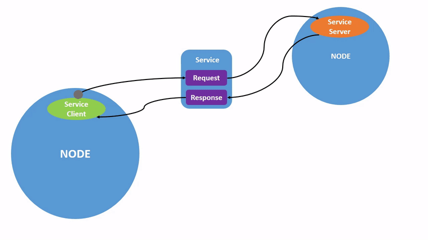
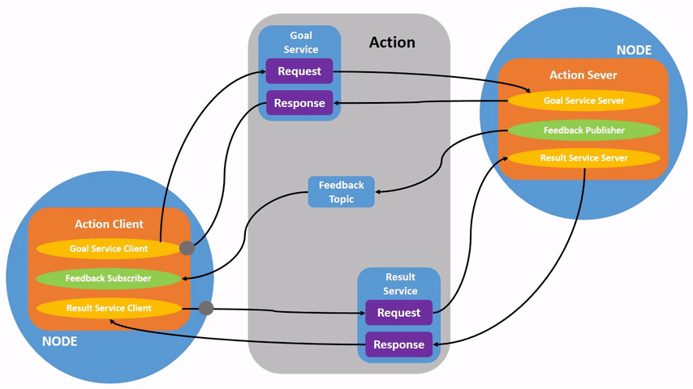
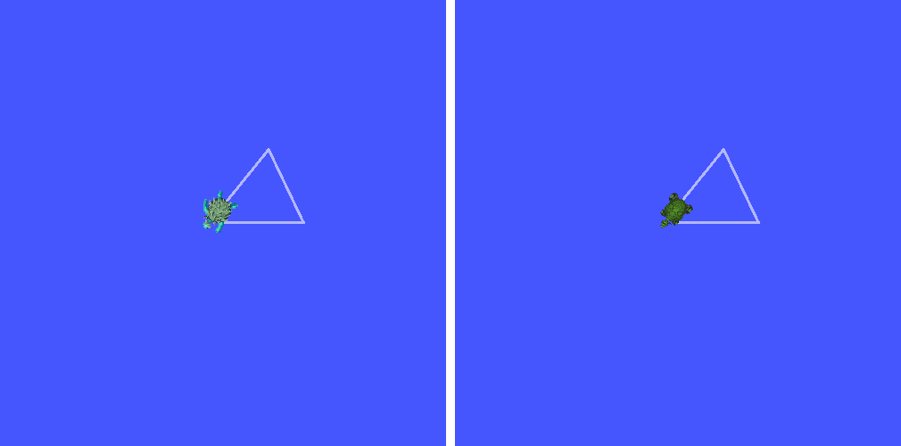
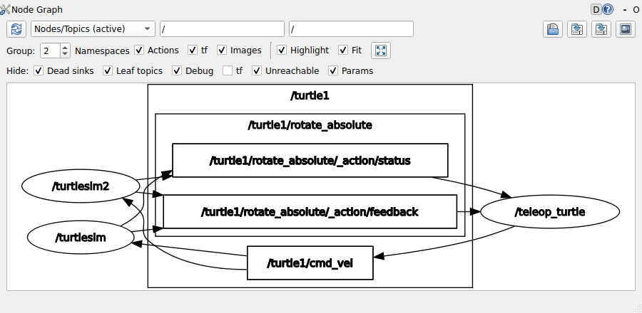

ROS 2 통신 개념 — 노드·토픽·서비스·액션·파라미터
- 노드는 무엇이고, 실행 파일과 노드는 같은 것인가?
- 노드끼리 데이터를 주고받는 방식은 왜 토픽·서비스·액션 세 가지나 있나? 각각 언제 쓰나?
- 돌고 있는 로봇의 설정값을 다시 빌드하지 않고 바꾸려면 어디에 두어야 하나?
geometry_msgs/msg/Twist라는 이름의 세 토막은 각각 무엇을 뜻하나?- 많은 메시지 안에 왜
header.frame_id라는 글자 칸이 들어 있나?
지금 우리 노트북에는 ROS 2 Jazzy가 깔려 있고, 터미널 두 개에 talker와 listener를 띄워
한쪽이 보낸 글자가 다른 쪽에 찍히는 것까지 봤다. 그런데 그 사이에서 무엇이 오갔고, 둘은 어떻게 서로를 찾았을까?
이 회차는 그 질문에 답하는 용어를 세운다. 노드·토픽·서비스·액션·파라미터 다섯 개, 그리고 그들이 주고받는 데이터의 형식인 인터페이스다. 명령어는 거의 치지 않는다. 대신 화면 속 거북이(turtlesim) 하나를 띄워 놓고 무엇이 노드이고 무엇이 토픽인지를 눈으로 짚는다.
이 회차는 에이전트가 대신 이해해 줄 수 없는 자리다. 18회의 확인 명령어도, 19~22회의 코드도 전부 오늘 세운 다섯 단어 위에서 돈다.
에이전트가 「/cmd_vel 토픽으로 Twist를 발행하도록 했습니다」라고 말했을 때
그 문장이 무슨 뜻인지 알아야 그 말을 확인할 수 있다.
한 장 요약
무엇을 먼저 볼지: 오른쪽 「이것만 알면 된다」 열이다. 가운데 열은 오늘 turtlesim에서 실제로 보게 될 이름이다.
| 용어 | 한 줄 정의 | turtlesim에서 | 이것만 알면 된다 |
|---|---|---|---|
| 노드 (node) | ROS 안에서 따로 도는 실행 단위 하나 | /turtlesim, /teleop_turtle | 실행 파일 이름과 노드 이름은 다를 수 있다 |
| 토픽 (topic) | 발행자가 보내고 구독자가 받는, 이름 붙은 데이터 흐름 | /turtle1/cmd_vel, /turtle1/pose | 보내는 쪽은 받는 쪽을 모른다. 1:N이 된다 |
| 서비스 (service) | 요청 하나에 응답 하나 | /spawn, /clear, /turtle1/set_pen | 한 번 시키고 결과를 받아야 끝나는 일 |
| 액션 (action) | 목표 → 피드백 여러 번 → 결과, 중간에 취소 가능 | /turtle1/rotate_absolute | 오래 걸리는 일. 이 과목 프로젝트에서는 개념만 |
| 파라미터 (parameter) | 노드가 가진 이름 붙은 설정값 | background_r·g·b | 튜닝 값은 여기 둔다 — 다시 빌드하지 않고 바꾼다 |
| 인터페이스 (interface) | 주고받는 데이터의 형식. msg · srv · action 세 종류 | geometry_msgs/msg/Twist | 이름은 패키지/종류/타입 세 토막 |
header.frame_id | 이 값이 어느 좌표계에서 잰 것인지 적는 칸 | (Pose에는 없다) | 숫자만으로는 기준을 알 수 없다 — 26회 TF로 가는 다리 |
① 노드 (Node) 🔴 사람이 이해한다
자율주행 로봇 한 대를 프로그램 하나로 짜면 어떻게 될까? 라이다를 읽는 코드, 콘을 찾는 코드, 조향을 정하는 코드, 바퀴 모터에 명령을 보내는 코드가 한 파일, 한 프로세스 안에 엉킨다. 그중 한 줄이 죽으면 로봇 전체가 선다. 콘 찾는 부분만 따로 시험해 보고 싶어도 모터 코드까지 같이 떠야 한다.
정의
노드(node)는 ROS 안에서 따로 도는 실행 단위 하나다. 보통 프로그램 하나(프로세스 하나)가 노드 하나다. ROS로 만든 시스템은 노드 여러 개를 동시에 띄우고, 노드끼리 데이터를 주고받아 하나의 일을 한다.
라이다 기반 자율주행이라면 이렇게 나눌 수 있다 — 라이다 드라이버 노드, 위치 인식 노드, 경로 계획 노드, 모터 드라이버 노드. 나눠 두면 각각을 따로 시험하고, 따로 고치고, 다른 로봇에 그대로 가져다 쓸 수 있다. 경로 계획 노드는 라이다 값과 현재 위치만 정해진 형식으로 받으면 되므로, 그 로봇이 바퀴로 가든 다리로 가든 상관하지 않는다.
실행 파일 이름과 노드 이름
입문할 때 가장 많이 헷갈리는 자리다. 노드에는 이름이 두 개 보인다.
| 이름 | 무엇인가 | 어디서 보이나 | turtlesim 예 |
|---|---|---|---|
| 실행 파일 이름 | 디스크에 있는 프로그램 파일의 이름 | ros2 run 패키지 실행파일로 띄울 때 치는 이름 | turtle_teleop_key |
| 노드 이름 | 그 프로그램이 떠서 ROS 안에서 쓰는 이름 | ROS 도구(rqt_graph 등)가 보여 주는 이름. /로 시작한다 | /teleop_turtle |
turtle_teleop_key라는 파일을 실행하면 /teleop_turtle이라는 노드가 뜬다.
③절에서 직접 확인한다. 「노드를 못 찾겠다」는 질문의 상당수가 이 둘을 섞어 쓴 데서 나온다.
실행 파일은 패키지(package)라는 묶음 안에 들어 있다. 패키지는 ROS 소프트웨어를 나눠 담는 단위로,
실행 파일(노드) 말고도 메시지 정의 파일, 설정 파일 같은 것을 같이 담는다.
ros2 run demo_nodes_cpp talker에서 앞의 demo_nodes_cpp가 패키지, 뒤의 talker가 실행 파일이다.
패키지를 직접 만드는 것은 19회에서 한다.
② 토픽 (Topic) — 발행자와 구독자 🔴 사람이 이해한다
라이다 드라이버 노드는 1초에도 여러 번 새 거리 값을 만든다. 그 값을 쓰고 싶은 노드는 콘 찾는 노드 하나일 수도 있고, 화면에 그려 보는 도구까지 둘일 수도 있다. 드라이버가 받을 노드를 하나하나 알고 직접 건네줘야 한다면 어떻게 될까? 받는 쪽이 하나 늘 때마다 드라이버 코드를 고쳐야 한다.
정의
토픽(topic)은 이름이 붙은 데이터 흐름이다. 데이터를 보내는 쪽을 발행자(publisher),
받는 쪽을 구독자(subscriber)라고 한다. 발행자는 「/scan이라는 이름으로 이 데이터를 내보낸다」고만 하고,
구독자는 「/scan이라는 이름의 데이터를 받겠다」고만 한다. 둘은 서로를 모른다. 이름만 맞으면 붙는다.
이렇게 오가는 데이터 한 건을 메시지(message)라고 하고, 그 메시지의 형식(어떤 칸이 어떤 타입으로 들어 있나)을 메시지 타입이라고 한다. 한 토픽에는 한 가지 메시지 타입만 흐른다. 형식 이야기는 ⑨절에서 자세히 한다.
| 성질 | 무엇을 뜻하나 |
|---|---|
| 단방향 | 발행자 → 구독자 한쪽으로만 간다. 구독자가 「잘 받았다」고 답하지 않는다 |
| 비동기(asynchronous) | 발행자는 보내고 바로 다음 일로 넘어간다. 누가 받았는지 기다리지 않는다 |
| 1:N · N:1 · N:N | 한 토픽에 발행자도 구독자도 여럿 붙을 수 있다. 구독자가 셋이면 같은 메시지가 셋에게 간다 |
| 계속 흐른다 | 센서 값, 위치, 속도 명령처럼 주기적으로 새로 나오는 데이터에 쓴다 |

노드 하나가 발행자이면서 구독자일 수도 있다. 콘을 따라가는 주행 노드라면 /scan을 구독하고,
판단한 결과를 속도 명령으로 바꿔 /cmd_vel에 발행한다. ROS 시스템 대부분이 이 모양이다 —
센서 → 판단 → 명령이 토픽으로 이어진다.
그럼 발행자와 구독자는 어떻게 서로를 찾을까? ROS 2에는 연결을 주선하는 중앙 프로그램이 따로 없다. 같은 컴퓨터, 같은 망에 있는 노드끼리 「나는 이 이름의 토픽을 내보낸다 / 받겠다」를 알려 서로를 찾아낸다. 그 일을 맡는 것이 DDS(Data Distribution Service)라는 통신 표준이다 — 프로그램 이름이 아니라 국제 표준 규격의 이름이다. 우리가 할 일은 이름을 맞추는 것뿐이다.
③ turtlesim과 rqt_graph — 노드와 토픽 눈으로 보기 🔴 사람이 본다
말로만 들으면 노드와 토픽이 잘 구별되지 않는다. 화면에서 직접 보자. 이 과목 3부 내내 쓸 실습 대상은 turtlesim이다. 거북이 한 마리가 파란 창 안을 돌아다니는 작은 시뮬레이터다.
터미널 1 — 거북이 창을 띄운다
$ ros2 run turtlesim turtlesim_node
[INFO] [1792271205.278925372] [turtlesim]: Starting turtlesim with node name /turtlesim
[INFO] [1792271205.282625545] [turtlesim]: Spawning turtle [turtle1] at x=[5.544445], y=[5.544445], theta=[0.000000]
두 번째 줄을 본다. turtlesim_node라는 실행 파일이 /turtlesim이라는 노드로 떴다고 스스로 알려 준다.
세 번째 줄은 그 안에 turtle1이라는 거북이를 창 한가운데(5.54, 5.54)에 놓았다는 뜻이다.
대괄호 안의 긴 숫자는 찍힌 시각이라 매번 다르다.
🆕 이 명령에서 처음 나오는 것
turtlesim패키지- ROS를 배우라고 만든 작은 2차원 시뮬레이터다.
ros-jazzy-desktop을 설치할 때 같이 깔렸다. 여기서는 결과를 글자가 아니라 거북이의 움직임으로 확인하려고 쓴다. turtlesim_node- 그 패키지 안의 실행 파일 중 하나로, 거북이 창을 띄우고 거북이를 움직이는 노드다. 거북이에게 「이 속도로 가라」는 명령을 받는 쪽이다.
터미널 2 — 키보드로 조종하는 노드를 띄운다
새 터미널을 하나 더 열고 친다.
$ ros2 run turtlesim turtle_teleop_key
Reading from keyboard
---------------------------
Use arrow keys to move the turtle.
Use g|b|v|c|d|e|r|t keys to rotate to absolute orientations. 'f' to cancel a rotation.
'q' to quit.이 터미널을 클릭해 둔 채로 화살표 키를 누르면 거북이가 움직인다. 위 화살표는 앞으로, 왼쪽·오른쪽 화살표는 제자리 회전이다. 한 번 누르면 잠깐 가다가 선다. 지나간 자리에 선이 남는다.

/turtlesim)가 아니라 다른 터미널의 노드가 보낸 명령이다.🆕 이 명령에서 처음 나오는 것
turtle_teleop_key- 키보드로 거북이를 조종하는 실행 파일이다. teleop은 tele-operation(원격 조종)의 줄임말이다. 여기서는 키를 누를 때마다 속도 명령 메시지를 하나씩 발행하는 노드로 쓰인다.
g|b|v|c|d|e|r|t키- 거북이를 정해진 방향으로 돌리라는 목표를 보낸다. 화살표와 전혀 다른 통신 방식(액션)을 쓴다. ⑤절에서 다시 본다.
turtle_teleop_key는 자기 터미널에 들어오는 키만 읽는다.
거북이 창을 클릭해 놓고 화살표를 누르면 아무 일도 안 일어난다. 오류도 안 난다.
키를 누르기 전에 터미널 2를 한 번 클릭한다.
터미널 3 — 연결을 그림으로 본다
세 번째 터미널에서 친다. 창이 하나 더 뜬다.
$ rqt_graph처음 뜬 창이 비어 있으면 왼쪽 위의 새로고침 버튼(파란 화살표 두 개)을 누른다. 그 옆 목록에서 Nodes/Topics (active)를 고르면 아래처럼 보인다.

/teleop_turtle → /turtle1/cmd_vel → /turtlesim.
키보드 노드가 발행하고 거북이 노드가 구독한다. 위쪽 묶음 /turtle1/rotate_absolute는 ⑤절의 액션이다.🆕 이 화면에서 처음 나오는 것
rqt_graph- 지금 떠 있는 노드와 토픽의 연결을 그림으로 그려 주는 도구다. rqt는 ROS의 화면 도구 모음 이름이고, 화면을 만드는 데 쓴 C++ 라이브러리 Qt(「큐트」라고 읽는다, 노르웨이 회사 Trolltech가 처음 만든 라이브러리)에서 이름을 땄다. 여기서는 누가 누구에게 보내고 있는지를 한 장으로 확인하는 데 썼다.
/turtle1/cmd_vel- 거북이
turtle1에게 보내는 속도 명령(command velocity) 토픽이다. 실물 로봇에서는 보통/cmd_vel이라는 이름이 같은 일을 한다.
명령어로 같은 것을 확인하는 법(ros2 node list, ros2 topic list)은 18회에서 제대로 다룬다.
그림을 말로 옮기면 이렇다. 노드 두 개가 토픽 하나로 이어져 있다.
터미널 2의 노드(/teleop_turtle)는 거북이 창이 있는지 모른다. 그저 키가 눌릴 때마다
/turtle1/cmd_vel이라는 이름으로 속도 메시지를 내보낼 뿐이다. 터미널 1의 노드(/turtlesim)는
그 이름을 구독하고 있어서 메시지가 올 때마다 거북이를 움직인다.
/turtlesim은 반대 방향으로도 토픽을 낸다. 거북이의 현재 위치와 방향을 /turtle1/pose로 계속 발행한다.
그런데 위 그림에는 안 보인다. 그 토픽을 구독하는 노드가 아직 없기 때문이다(rqt_graph는 기본 설정에서
받는 이가 없는 토픽을 숨긴다). 20회에서 이 토픽을 구독하는 노드를 직접 만들면 그림에 나타난다.
| 터미널 | 실행 파일 | 노드 이름 | 토픽 /turtle1/cmd_vel에서의 역할 |
|---|---|---|---|
| 1 | turtlesim_node | /turtlesim | 구독자 — 받은 속도로 거북이를 움직인다 |
| 2 | turtle_teleop_key | /teleop_turtle | 발행자 — 키가 눌릴 때마다 보낸다 |
| 3 | rqt_graph | (그림에는 자기를 안 그린다) | 보지만 끼어들지 않는다 |
turtle_teleop_key 노드」라고 말하면
그 이름의 노드는 어디에도 없다.
④ 서비스 (Service) — 요청과 응답 🔴 사람이 이해한다
거북이를 한 마리 더 만들고 싶다고 하자. 「(2, 3) 자리에 새 거북이를 놓아 달라」는 부탁이다. 이것을 토픽으로 보내면 어떻게 될까? 토픽은 보내고 끝이라 정말 만들어졌는지, 새 거북이 이름이 무엇인지 알 길이 없다. 그리고 이 부탁은 계속 흐르는 데이터가 아니라 한 번 하고 마는 일이다.
정의
서비스(service)는 요청(request) 하나에 응답(response) 하나가 돌아오는 통신 방식이다. 요청하는 쪽을 서비스 클라이언트(service client), 요청을 받아 일을 하고 응답을 돌려주는 쪽을 서비스 서버(service server)라고 한다. 요청한 쪽은 응답을 받아야 그 일이 끝난다.

| 성질 | 무엇을 뜻하나 |
|---|---|
| 양방향 | 요청이 가고 응답이 온다. 응답에 「성공했다」·「이 이름으로 만들었다」 같은 결과가 담긴다 |
| 한 번 | 요청 하나에 응답 하나로 끝난다. 계속 흐르는 데이터에는 쓰지 않는다 |
| 서버 하나 · 클라이언트 여럿 | 같은 이름의 서비스 서버는 하나를 두고, 여러 클라이언트가 그 서버에 요청할 수 있다 |
turtlesim 노드는 서비스 서버를 여럿 갖고 있다. /spawn(거북이 하나 더 만들기), /clear(그린 선 지우기),
/reset(처음 상태로), /turtle1/set_pen(선 색·굵기 바꾸기)이 그것이다.
rqt_graph는 서비스 연결을 그리지 않아 위 그림에는 안 나온다.
서비스를 명령으로 직접 불러 보는 것은 18회에서, 코드로 서버와 클라이언트를 만드는 것은 21회에서 한다.
⑤ 액션 (Action) — 목표·피드백·결과 🔴 사람이 이해한다
「저 문 앞까지 가라」는 명령을 서비스로 보내면 어떨까? 로봇이 문 앞에 도착할 때까지 30초가 걸린다면, 요청한 쪽은 그동안 지금 어디쯤 왔는지 모르고, 가는 도중에 「그만, 취소」라고 말할 방법도 없다. 서비스는 짧게 끝나는 일에 맞춰진 방식이다.
정의
액션(action)은 오래 걸리는 일을 맡기는 통신 방식이다. 세 가지가 오간다.
| 오가는 것 | 방향 | 무엇을 담나 | RotateAbsolute(거북이 돌리기)에서 |
|---|---|---|---|
| 목표 (goal) | 클라이언트 → 서버 | 무엇을 해 달라는지 | 이 방향(라디안)을 보게 돌아라 |
| 피드백 (feedback) | 서버 → 클라이언트, 여러 번 | 지금 얼마나 했는지 | 아직 이만큼 더 돌아야 한다 |
| 결과 (result) | 서버 → 클라이언트, 끝날 때 한 번 | 다 하고 난 결과 | 처음 자세에서 이만큼 돌았다 |

turtlesim에도 액션이 하나 있다. ③절 rqt_graph 그림 위쪽의 /turtle1/rotate_absolute 묶음이 그것이다.
그 안의 _action/feedback·_action/status 두 네모가 바로 액션을 이루는 토픽이다 —
위 그림의 Feedback Topic이 화면에 실제로 나타난 것이다.
터미널 2(키보드 노드)를 클릭하고 e를 눌러 보자. 거북이가 왼쪽 위 대각선 쪽으로 돌아서 멈추고, 터미널 1(거북이 노드)에 이 줄이 찍힌다.
[INFO] [1792271217.026459993] [turtlesim]: Rotation goal completed successfully키보드 노드가 목표(이 방향을 보라)를 보냈고, 거북이 노드가 돌면서 피드백을 보내다가, 다 돌고 나서 결과를 돌려주며 이 줄을 남긴 것이다. 돌고 있는 동안 f를 누르면 취소된다.
이 과목의 콘 트랙 프로젝트에서는 액션을 쓰지 않는다. 주행 노드는 「목표 하나를 맡기고 기다리는」 모양이 아니라 라이다가 올 때마다 속도를 새로 정하는 모양이라 토픽이 맞기 때문이다. 다만 로봇 팔 움직이기, 지도 위 목적지까지 가기(Nav2 같은 내비게이션 패키지) 같은 일은 대부분 액션으로 되어 있어서, 남이 만든 패키지를 쓰다 보면 자주 만난다. 그래서 개념까지는 알아 둔다.
⑥ 토픽·서비스·액션 비교 🔴 사람이 고른다
셋을 각각 세웠으니 이제 나란히 놓는다. 새 기능을 만들 때 셋 중 무엇으로 할지는 세 질문으로 거의 정해진다.
무엇을 먼저 볼지: 맨 아래 「언제 쓰나」 줄이다. 위의 줄들은 그 이유다.
| 토픽 | 서비스 | 액션 | |
|---|---|---|---|
| 보내는 쪽 / 받는 쪽 | 발행자 / 구독자 | 클라이언트 / 서버 | 클라이언트 / 서버 |
| 오가는 것 | 메시지가 한쪽으로 | 요청 → 응답 | 목표 → 피드백 여러 번 → 결과 |
| 보낸 쪽이 결과를 아나 | 모른다 | 응답으로 안다 | 중간 경과까지 안다 |
| 중간에 취소 | — | 못 한다 | 할 수 있다 |
| 몇 대 몇 | N : N | 서버 1 : 클라이언트 N | 서버 1 : 클라이언트 N |
| 형식 파일 | .msg | .srv | .action |
| turtlesim에서 | /turtle1/cmd_vel, /turtle1/pose | /spawn, /clear | /turtle1/rotate_absolute |
| 언제 쓰나 | 계속 흐르는 데이터 — 센서 값, 위치, 속도 명령 | 짧게 끝나는 한 번의 부탁 — 켜기·끄기, 초기화 | 오래 걸리는 일 — 목적지까지 가기, 팔 움직이기 |
이 프롬프트의 핵심은 마지막 문장이다. 고르지 않은 이유까지 받아 보면 에이전트가 정말 판단을 한 것인지, 익숙한 쪽을 그냥 고른 것인지가 드러난다. 그 이유가 위 표의 「언제 쓰나」 줄과 맞는지는 여러분이 확인합니다.
⑦ 파라미터 (Parameter) 🔴 사람이 이해한다
콘 트랙을 달리다 보면 속도를 조금 낮추고 싶을 때가 생긴다. 속도 값이 코드에 const float speed = 0.15f;처럼
박혀 있으면 어떻게 해야 할까? 로봇을 세우고, 코드를 고치고, 다시 빌드하고, 다시 띄운다. 값 하나를 바꿀 때마다 그렇다.
튜닝은 값을 수십 번 바꿔 보는 일이다.
정의
파라미터(parameter)는 노드가 가진 이름 붙은 설정값이다. 노드는 시작할 때 자기 파라미터를 선언하고 그 값을 읽어 쓴다. 그리고 밖에서 그 값을 읽거나(get) 바꿀(set) 수 있다. 노드를 끄지도, 다시 빌드하지도 않고.
파라미터는 노드마다 따로 갖는다. 그래서 파라미터를 가리킬 때는 「어느 노드의 어떤 파라미터」인지까지 말한다.
turtlesim 노드에는 배경색을 정하는 background_r·background_g·background_b(빨강·초록·파랑 성분)
파라미터가 있다. 지금 창이 파란 것은 이 세 값 때문이고, 18회에서 이것을 실행 중에 바꿔 배경색을 바꿔 본다.
파라미터에 담을 수 있는 타입은 정해져 있다. 구조체 같은 복잡한 것은 못 담는다.
| 파라미터 타입 | C++에서 | 이런 값에 |
|---|---|---|
bool | bool | 디버그 출력 켜기/끄기 |
int64 | int64_t | 콘으로 칠 최소 점 개수 |
float64 | double | 목표 속도, 조향 이득, 판정 거리 |
string | std::string | 구독할 토픽 이름, 좌표계 이름 |
위 타입의 배열, byte[] | std::vector<…> | 구간별 속도 목록 |
float64(double)로 저장된다. float32 파라미터는 따로 없다.
가운데 열이 21회에서 코드로 파라미터 값을 꺼낼 때의 C++ 타입이다.
파라미터는 토픽·서비스·액션과 같은 줄에 놓이지만 성격이 조금 다르다. 앞의 셋이 데이터를 주고받는 방법이라면 파라미터는 노드 안의 설정값이다. 다만 밖에서 그 값을 읽고 바꾸는 일 자체는 ROS가 서비스로 처리해 준다. 우리가 서비스를 직접 짜지 않아도 노드마다 그 창구가 자동으로 생긴다.
⑧ 콘 트랙 프로젝트에서의 쓰임 🔴 사람이 판단
다섯 개를 다 세웠다. 그럼 이 과목의 목표인 콘 트랙 주행에서는 각각이 어디에 들어갈까? 라이다로 콘을 보고, 콘 사이 가운데로 조향해 달리는 로봇이다.
| 방식 | 콘 트랙 주행 프로젝트에서 | 얼마나 쓰나 | 어디서 배우나 |
|---|---|---|---|
| 토픽 | 라이다 값 받기(/scan), 속도 명령 보내기(/cmd_vel) | 거의 전부 | 20회 코드 · 24회 라이다 · 27회 주행 |
| 서비스 | 주행 시작·정지 같은 한 번의 명령 | 써도 되고 안 써도 된다 | 21회 |
| 액션 | 쓰지 않는다 | 개념만 안다 | 오늘 |
| 파라미터 | 콘 무리 판정 거리, 목표 속도, 조향 이득 | 튜닝 값은 전부 여기 | 21회 |
받은 표에서 메시지 타입 이름이 실제로 있는지는 ⑨절의 ros2 interface show로 하나씩 확인할 수 있다.
없는 타입을 그럴듯하게 지어내는 경우가 있다.
⑨ 인터페이스 (msg · srv · action) 🔴 사람이 읽는다
발행자가 「거리 값」을 보낸다고 해 보자. 받는 쪽은 그것이 float 하나인지, 360개짜리 배열인지,
단위가 미터인지 센티미터인지 어떻게 알까? 보내는 쪽과 받는 쪽이 형식을 미리 약속해 두어야 한다.
게다가 ROS에서는 두 노드가 다른 언어(C++·파이썬)로 짜였을 수도 있다.
정의
노드끼리 주고받는 데이터의 형식을 인터페이스(interface)라고 한다. 통신 방식마다 한 종류씩, 세 가지다.
| 종류 | 파일 | 쓰는 곳 | 안의 모양 | 편하게 부르는 이름 |
|---|---|---|---|---|
| msg | 이름.msg | 토픽 | 필드 목록 하나 | 메시지 타입 |
| srv | 이름.srv | 서비스 | 요청 --- 응답 (목록 둘) | 서비스 타입 |
| action | 이름.action | 액션 | 목표 --- 결과 --- 피드백 (목록 셋) | 액션 타입 |
어느 것이든 안은 한 줄에 「필드 타입 필드 이름」 하나다. C++의 구조체 멤버 선언과 거의 같은 모양이다. 파일은 패키지를 빌드할 때 C++ 헤더와 파이썬 클래스로 자동 변환된다. 그래서 언어가 달라도 같은 형식으로 붙는다.
필드타입1 필드이름1
필드타입2 필드이름2
필드타입3 필드이름3필드 타입 — 기본 타입과 C++ 타입
무엇을 먼저 볼지: 가운데 C++ 열이다. 20회부터 코드에서 이 타입으로 값을 꺼낸다.
| 인터페이스에 쓰는 타입 | C++에서 | 메모 |
|---|---|---|
bool | bool | |
int32 · uint32 | int32_t · uint32_t | int8~int64, uint8~uint64도 같은 규칙 |
float32 | float | 라이다 거리 값이 이것이다 |
float64 | double | 속도·좌표가 이것이다 |
string | std::string | |
float32[] (길이 안 정함) | std::vector<float> | 12회에서 쓴 그 vector다 |
float64[9] (길이 고정) | std::array<double, 9> | |
| 다른 인터페이스 이름 | 그 인터페이스의 C++ 타입 | 메시지 안에 메시지를 넣는다 (아래 Vector3) |
Twist가 Vector3 두 개로 되어 있는 것을 본다.
인터페이스의 이름 — 패키지/종류/타입
인터페이스는 언제나 세 토막 이름으로 부른다. geometry_msgs/msg/Twist라면
geometry_msgs가 그 정의가 들어 있는 패키지, msg가 종류(msg·srv·action),
Twist가 타입 이름이다. 이 이름은 그대로 파일 위치이기도 하고, C++ 코드에서 쓰는 이름이기도 하다.
| 어디서 | 이렇게 보인다 |
|---|---|
| 인터페이스 이름 | geometry_msgs/msg/Twist |
| 정의 파일 (설치된 자리) | /opt/ros/jazzy/share/geometry_msgs/msg/Twist.msg |
| C++ 헤더 (20회에서 쓴다) | #include "geometry_msgs/msg/twist.hpp" — 소문자, 단어 사이 _ |
| C++ 타입 (20회에서 쓴다) | geometry_msgs::msg::Twist — 7회에서 본 네임스페이스 ::가 두 번 |
/turtle1/cmd_vel)과 인터페이스 이름(geometry_msgs/msg/Twist)은 다른 것이다.
앞의 것은 「어느 흐름인가」, 뒤의 것은 「그 흐름에 무엇이 담기나」다.
정의 파일은 그냥 글자 파일이라 cat으로 열린다.
$ cat /opt/ros/jazzy/share/geometry_msgs/msg/Twist.msg
# This expresses velocity in free space broken into its linear and angular parts.
Vector3 linear
Vector3 angular
#로 시작하는 줄은 주석이다. 필드가 둘이고, 둘 다 타입이 Vector3라는 다른 메시지다.
그 Vector3 안에 무엇이 있는지 보려면 파일을 또 찾아 열어야 한다. 그 수고를 덜어 주는 명령이 있다.
$ ros2 interface show geometry_msgs/msg/Twist
# This expresses velocity in free space broken into its linear and angular parts.
Vector3 linear
float64 x
float64 y
float64 z
Vector3 angular
float64 x
float64 y
float64 z🆕 이 명령에서 처음 나오는 것 — 맛보기
ros2 interface show 패키지/종류/타입- 인터페이스 정의를 보여 준다. 안에 든 다른 인터페이스까지 들여쓰기로 펼쳐서 보여 주는 것이
cat과 다른 점이다. 여기서는Twist가 결국float64여섯 개라는 것을 한 번에 확인하는 데 썼다.
지금은 모양만 봐 두면 된다. ros2 확인 명령어는 18회에서 제대로 다룬다.
srv와 action은 ---로 칸을 나눈다. turtlesim의 것을 하나씩 보자.
$ ros2 interface show turtlesim/srv/Spawn
float32 x
float32 y
float32 theta
string name # Optional. A unique name will be created and returned if this is empty
---
string name
--- 위가 요청, 아래가 응답이다. 「(x, y)에 theta 방향으로, 이 이름의 거북이를 만들어 달라」고 요청하면
「이 이름으로 만들었다」가 돌아온다. 이름을 비워 두면 서버가 지어서 알려 준다는 주석도 있다.
④절에서 「정말 만들어졌는지, 이름이 무엇인지 알 길이 없다」고 했던 것을 응답 칸이 해결한다.
$ ros2 interface show turtlesim/action/RotateAbsolute
# The desired heading in radians
float32 theta
---
# The angular displacement in radians to the starting position
float32 delta
---
# The remaining rotation in radians
float32 remaining
칸이 셋이다. 순서대로 목표(보고 싶은 방향 theta), 결과(처음 자세에서 돈 각도 delta),
피드백(아직 남은 회전 remaining)이다. ⑤절의 e 키가 보낸 것이 맨 위 칸이다.
셋째 칸이 결과가 아니라 피드백이라는 점이 헷갈리기 쉽다 — 「목표 · 결과 · 피드백」 순서로 외워 둔다.
ROS 1 시절에는 인터페이스 이름이 두 토막이었다. geometry_msgs/Twist, C++에서는 geometry_msgs::Twist.
인터넷에는 아직 ROS 1 자료가 많아서, AI가 ROS 2 코드에 이 이름을 섞어 넣는 경우가 있다.
가운데 msg가 빠져 있으면 ROS 1 이름이다. 같은 이유로 roscore, rosrun이 보이면
ROS 1 명령이다 — ROS 2에는 roscore가 아예 없다.
⑩ LaserScan · Twist · PointStamped 🔴 사람이 읽는다
이 과목에서 가장 자주 만날 메시지 셋을 미리 펼쳐 본다. 지금 필드를 전부 외울 필요는 없다. 각 메시지가 무엇을 담으려고 그 칸들을 갖고 있는지만 보면 된다.
geometry_msgs/msg/Twist — 속도 명령
위에서 본 그대로 linear(직선 속도)와 angular(회전 속도)가 각각 x·y·z 세 칸이다. 3차원 공간의 모든 움직임을 담을 수 있게 여섯 칸을 둔 것이다.
바퀴 두 개로 움직이는 로봇(turtlesim 거북이, 터틀봇)은 보통 그중 두 칸만 쓴다.
| 필드 | 뜻 | 단위 |
|---|---|---|
linear.x | 앞으로 가는 속도 (음수면 뒤로) | m/s |
angular.z | 제자리에서 도는 속도 (위에서 봐서 반시계가 양수) | rad/s |
| 나머지 넷 | 옆으로 가기·위로 뜨기·기울기 — 바퀴 로봇은 못 하므로 0 |
linear.x, 왼쪽·오른쪽은 angular.z.
🆕 처음 나오는 이름
- REP (ROS Enhancement Proposal)
- 사람 이름이 아니라 ROS 개선 제안 문서의 줄임말이다. 번호가 붙은 문서로 ROS 전체가 따르는 약속을 적어 둔다.
REP 103은 단위와 좌표축 방향을 정한 문서다. 여기서는
Twist의 단위가 어디서 왔는지 밝히는 데 썼다.
좌표 규약(x 앞·y 왼쪽·반시계 양수)은 25회에서 제대로 다룬다.
sensor_msgs/msg/LaserScan — 라이다 한 바퀴
라이다가 한 바퀴 돌며 잰 거리를 한 메시지에 담는다. 정의에 주석이 많아 길지만 그대로 싣는다.
$ ros2 interface show sensor_msgs/msg/LaserScan
# Single scan from a planar laser range-finder
#
# If you have another ranging device with different behavior (e.g. a sonar
# array), please find or create a different message, since applications
# will make fairly laser-specific assumptions about this data
std_msgs/Header header # timestamp in the header is the acquisition time of
builtin_interfaces/Time stamp
int32 sec
uint32 nanosec
string frame_id
# the first ray in the scan.
#
# in frame frame_id, angles are measured around
# the positive Z axis (counterclockwise, if Z is up)
# with zero angle being forward along the x axis
float32 angle_min # start angle of the scan [rad]
float32 angle_max # end angle of the scan [rad]
float32 angle_increment # angular distance between measurements [rad]
float32 time_increment # time between measurements [seconds] - if your scanner
# is moving, this will be used in interpolating position
# of 3d points
float32 scan_time # time between scans [seconds]
float32 range_min # minimum range value [m]
float32 range_max # maximum range value [m]
float32[] ranges # range data [m]
# (Note: values < range_min or > range_max should be discarded)
float32[] intensities # intensity data [device-specific units]. If your
# device does not provide intensities, please leave
# the array empty.무엇을 먼저 볼지: 필드를 세 묶음으로 나눠 읽는다.
| 묶음 | 필드 | 무엇을 담나 |
|---|---|---|
| 언제·어디서 | header (stamp, frame_id) | 잰 시각, 어느 좌표계에서 잰 것인지 — ⑪절 |
| 값을 읽는 법 | angle_min · angle_max · angle_increment, range_min · range_max, time_increment · scan_time | 배열의 몇 번째 값이 몇 도 방향인지, 몇 m 밖의 값은 버려야 하는지 |
| 값 | ranges · intensities | 거리 배열, 반사 세기 배열 — C++에서는 std::vector<float> |
ranges만 있으면 될 것 같은데 왜 칸이 이렇게 많을까? 숫자 배열만 받아서는
인덱스 90이 왼쪽인지 오른쪽인지, 0.05가 진짜 값인지 측정 실패인지 알 수 없기 때문이다.
읽는 법을 메시지가 같이 들고 다닌다. ranges[i]가 몇 도 방향인지 계산하는 법은 24회에서 이 필드들로 직접 해 본다.
geometry_msgs/msg/PointStamped — 기준이 붙은 점 하나
$ ros2 interface show geometry_msgs/msg/PointStamped
# This represents a Point with reference coordinate frame and timestamp
std_msgs/Header header
builtin_interfaces/Time stamp
int32 sec
uint32 nanosec
string frame_id
Point point
float64 x
float64 y
float64 z
점 하나(point의 x·y·z)에 header를 붙인 것이다. 첫 줄 주석이 그 뜻을 그대로 말한다 —
「기준 좌표계와 시각이 붙은 점」. header가 없는 geometry_msgs/msg/Point도 따로 있다.
이름 끝의 Stamped가 「header가 붙은 판」이라는 표시다. 27회에서 찾은 콘 위치를, 26회에서 좌표계를 바꿀 때 이 메시지를 쓴다.
🆕 위 두 정의에서 처음 나오는 것
std_msgs/Header header- 여러 메시지가 머리에 붙이는 공통 칸이다. 안에
stamp(시각)와frame_id(좌표계 이름) 둘이 있다. 여기서는LaserScan과PointStamped가 똑같은 머리를 달고 있다는 것을 보이는 데 썼다. (메시지 안에서 다른 메시지를 쓸 때는 가운데msg를 빼고 두 토막으로 적는다.) builtin_interfaces/Time stamp- 시각 하나.
sec(1970년 1월 1일부터 센 초)와nanosec(그 초 안의 나노초)로 나눠 담는다. ③절 터미널 1의 대괄호 안 긴 숫자1792271205.278925372가 바로 이 모양 — 점 앞이 초, 뒤가 나노초다.
⑪ header.frame_id — 어느 좌표계에서 잰 값인가 🔴 사람이 판단
라이다가 「정면 1.0 m에 콘이 있다」고 보냈다고 하자. 그 콘은 로봇 중심에서 1.0 m일까?
라이다는 보통 로봇 중심에 붙어 있지 않다. 이 자료에서 둔 가정으로, 라이다가 로봇 중심보다 0.1 m 앞에 달려 있다고 하자.
그러면 같은 콘이 라이다 기준으로는 1.0 m, 로봇 중심 기준으로는 1.1 m다. 숫자 1.0만 받아서는 어느 쪽인지 알 수 없다.
콘 사이 폭이 수십 cm인 트랙에서 0.1 m는 작은 차이가 아니다. 게다가 실제로는 앞뒤뿐 아니라 좌우·높이·방향까지 어긋날 수 있다.
정의
header.frame_id는 이 메시지의 숫자가 어느 좌표계(frame)를 기준으로 잰 것인지 적는 글자 칸이다.
「라이다 좌표계」, 「로봇 몸체 좌표계」, 「지도 좌표계」처럼 좌표계마다 이름을 붙여 두고, 메시지에 그 이름을 적어 보낸다.
라이다라면 base_scan, 로봇 몸체라면 base_link 같은 이름이 들어간다.
그러면 받는 쪽은 숫자와 함께 기준을 받는다. 그리고 「라이다 좌표계는 몸체 좌표계에서 0.1 m 앞」이라는 관계만 알면
값을 다른 좌표계로 옮겨 계산할 수 있다. 그 관계들을 관리해 주는 것이 26회의 TF다. frame_id는 TF가 일을 시작하는 손잡이다.
오늘 본 메시지를 「header가 있나」로 나눠 보면 이렇다.
| 메시지 | header | 왜 |
|---|---|---|
sensor_msgs/msg/LaserScan | 있다 | 센서가 잰 값이다. 어디서 쟀는지가 값의 일부다 |
geometry_msgs/msg/PointStamped | 있다 | 좌표계를 바꿔 계산할 점이다 (26회) |
geometry_msgs/msg/Twist | 없다 | 받는 로봇 자기 몸 기준으로 읽기로 약속돼 있다 |
turtlesim/msg/Pose | 없다 | turtlesim 세계에는 좌표계가 창 하나뿐이다 |
Pose의 x·y를 그대로 써도 되지만, 실물 로봇에서는 기준이 여러 개이므로
라이다 값을 쓸 때마다 frame_id를 먼저 본다. 이것이 25·26회로 가는 다리다.
$ ros2 interface show turtlesim/msg/Pose
float32 x
float32 y
float32 theta
float32 linear_velocity
float32 angular_velocity
거북이의 위치(x, y)와 방향(theta, 라디안), 지금의 직선·회전 속도다. header가 없다.
20회에서 이 메시지를 구독해 「벽 앞에서 서는」 노드를 만든다.
turtlesim과 시뮬레이션에서는 좌표계가 하나뿐이거나, 센서가 정확히 로봇 중심에 있는 것처럼 만들어 두는 경우가 많다.
그래서 frame_id를 무시한 코드도 잘 돈다. 실물 로봇에 올리는 순간 라이다 위치만큼 어긋난다.
콘을 늘 조금씩 비껴가는 로봇이라면 frame_id와 라이다가 달린 위치부터 확인해 볼 만하다.
받은 표는 위의 ros2 interface show 출력과 한 줄씩 대조합니다. 필드 이름이 하나라도 다르면
(예: angle_step, distances) 그 표는 지어낸 것이다.
🧪 실습 — turtlesim의 노드·토픽·액션 🔴 사람이 본다
🧪 이걸 해 보면 무엇을 알게 되나
화면 속 무엇이 노드이고 무엇이 토픽인지 자기 손으로 짚는다. 그리고 토픽이 1:N이라는 것 — 보내는 쪽 하나가 받는 쪽 여럿을 동시에 움직인다는 것 — 을 눈으로 본다.
준비물
- ROS 2 Jazzy가 설치된 WSL. 새 터미널에서
ros2가 바로 먹어야 한다(.bashrc에source한 줄이 들어 있는 상태) - 터미널 네 개 (Windows 터미널의 탭 네 개면 된다)
- 빌드할 코드는 없다
절차
- (2분) 터미널 1에서 거북이 창을 띄운다. 출력 둘째 줄에서 노드 이름을 찾아 적어 둔다.
$ ros2 run turtlesim turtlesim_node - (3분) 터미널 2에서 키보드 노드를 띄우고, 터미널 2를 클릭한 채로 화살표 키로 거북이를 움직인다.
$ ros2 run turtlesim turtle_teleop_key - (5분) 터미널 3에서
rqt_graph를 띄우고, 새로고침 → Nodes/Topics (active)를 고른다. 다음 세 가지를 찾아 적는다. ① 타원 두 개의 이름 ② 두 타원을 잇는 네모의 이름 ③ 화살표 방향(누가 발행자인가). 그리고 ①의 이름 중 실행 파일 이름과 다른 것이 무엇인지 적는다.$ rqt_graph - (3분) 터미널 2를 클릭하고 e를 누른다. 거북이가 돌아 멈추면 터미널 1에
Rotation goal completed successfully가 찍혔는지 본다. rqt_graph에서 이 통신이 어느 묶음에 해당하는지 짚는다. - (5분) 터미널 4에서 거북이 노드를 하나 더 띄운다. 이름이 겹치지 않게 노드 이름만 바꾼다.
창이 두 개가 된다. 터미널 2를 클릭하고 화살표를 누른다. 두 거북이가 똑같이 움직이나? rqt_graph를 새로고침해$ ros2 run turtlesim turtlesim_node --ros-args -r __node:=turtlesim2 [INFO] [1792271545.746890578] [turtlesim2]: Starting turtlesim with node name /turtlesim2 [INFO] [1792271545.750819888] [turtlesim2]: Spawning turtle [turtle1] at x=[5.544445], y=[5.544445], theta=[0.000000]/turtle1/cmd_vel에서 나가는 화살표가 몇 개인지 센다. - (3분) 터미널 2에서 q로 키보드 노드를 끄고 rqt_graph를 새로고침한다. 무엇이 사라졌나? 모든 창은 각 터미널에서 Ctrl+C로 닫는다.
🆕 5번 명령에서 처음 나오는 것
--ros-args -r __node:=turtlesim2--ros-args뒤는 프로그램이 아니라 ROS가 읽는 옵션이다.-r은 이름을 바꿔 붙이는 것(remap)이고,__node:=는 노드 이름을 바꾸라는 뜻이다. 여기서는 같은 실행 파일을 두 번 띄우면서 노드 이름만/turtlesim2로 다르게 하는 데 썼다. 실행 파일 이름과 노드 이름이 따로라는 것이 여기서도 드러난다.
이 과목에서 이름 바꿔 붙이기는 이 자리에서만 쓴다. 여러 노드를 한꺼번에 띄우는 launch 파일은 21회에서 다룬다.
이렇게 되면 성공이다
5번에서 두 창의 거북이가 같은 모양의 선을 그린다. 키보드 노드는 하나인데 거북이 노드 둘이 같은 토픽을 구독하고 있어서다.

/turtlesim, 오른쪽이 /turtlesim2의 창이다. 두 선이 똑같다는 것을 본다.
두 창의 거북이 무늬가 다른 것은 turtlesim이 창을 열 때마다 거북이 그림을 무작위로 고르기 때문이다.
/turtle1/cmd_vel을 본다. 들어오는 화살표 하나, 나가는 화살표 둘 — 이것이 1:N이다.
발행자 /teleop_turtle은 코드 한 줄 바뀐 것 없이 구독자가 둘로 늘었다.6번에서는 /teleop_turtle 타원과 그 화살표가 사라진다. 노드가 꺼지면 그 노드의 발행자·구독자도 같이 없어진다.
5번 상태에서 e를 누르면 거북이 둘이 다 돌기는 하는데, 터미널 2에 붉은 줄이 하나 찍힌다.
[ERROR] [1792271681.655060913] [teleop_turtle.rclcpp_action]: unknown goal response, ignoring...
두 거북이 노드가 같은 이름(/turtle1/rotate_absolute)의 액션 서버를 하나씩 열었기 때문이다.
클라이언트는 목표 하나에 응답이 둘 오니 하나를 「모르는 응답」으로 버린다.
토픽은 구독자가 여럿이어도 괜찮지만, 서비스와 액션은 같은 이름의 서버를 하나만 둔다(⑥절 표의 「서버 1」)는 것이 이렇게 드러난다.
이 자료의 출력은 컨테이너(우분투 24.04 + Jazzy)에서 받은 것이다. 대괄호 안의 시각 숫자는 실행할 때마다 다르다.
컨테이너에서만 맨 위에 찍히는 안내 줄 하나(QStandardPaths: XDG_RUNTIME_DIR not set …)는 뺐다.
🤖 오늘 나온 프롬프트 모음 🟢 맡긴다
| 이럴 때 | 이렇게 말한다 | 받은 뒤 사람이 확인하는 것 |
|---|---|---|
| 새 기능을 무엇으로 만들지 고를 때 | "(기능)을 토픽·서비스·액션 중 무엇으로 만들지 하나 고르고, 나머지 둘을 고르지 않은 이유도 한 줄씩 알려 줘." | ⑥절 「언제 쓰나」 줄과 맞나 |
| 시스템을 노드로 나눌 때 | "이 시스템을 노드로 나누고, 노드마다 구독·발행 토픽을 이름과 메시지 타입까지 표로 적어 줘. 튜닝 값은 파라미터로 따로. 코드는 아직 쓰지 마." | 타입이 실제로 있나 (ros2 interface show) |
| 메시지를 처음 쓸 때 | "(메시지 타입)의 필드를 표로 정리하고, 단위와 쓸 때 주의할 점을 한 줄씩 적어 줘." | 필드 이름이 정의와 한 글자도 안 다른가 |
| 받은 코드·설명이 수상할 때 | "이 코드에 ROS 1 방식(roscore, rosrun, 두 토막 메시지 이름)이 섞여 있으면 짚어 줘." | 가운데 msg가 빠진 이름이 없나 |
rqt_graph 그림을 읽는 것은 프롬프트로 넘기지 않는다 — 그림은 사람이 본다.
✅ 오늘의 점검
조금 더 알아두면 시험 범위 아님
액션 속을 열어 보면 — 서비스 셋과 토픽 둘
⑤절 그림의 회색 상자를 이름으로 옮기면 이렇다. 액션 하나는 정해진 이름의 서비스와 토픽으로 이루어져 있다.
| 부품 | 종류 | 하는 일 |
|---|---|---|
| 목표 보내기 (send goal) | 서비스 | 목표를 보내고 「받아들였다/거절했다」를 받는다 |
| 취소 (cancel goal) | 서비스 | 진행 중인 목표를 그만두게 한다 |
| 결과 받기 (get result) | 서비스 | 일이 끝나면 결과를 받는다 |
| 피드백 (feedback) | 토픽 | 진행 상황을 계속 보낸다 |
| 상태 (status) | 토픽 | 목표가 지금 진행 중인지·끝났는지·취소됐는지 알린다 |
rqt_graph에 보였던 _action/feedback과 _action/status가 아래 두 줄이다.
서비스 셋은 rqt_graph가 서비스를 안 그리므로 보이지 않는다. 이름 앞의 _는 「사람이 직접 쓰라고 둔 이름이 아니다」라는 표시다.
파라미터를 바꾸는 것도 사실은 서비스다
노드가 하나 뜨면 ROS는 그 노드 이름 아래에 get_parameters·set_parameters·list_parameters 같은
서비스를 자동으로 만든다. turtlesim이라면 /turtlesim/set_parameters다.
18회에서 칠 ros2 param set 명령은 속으로 이 서비스를 부르는 것이다.
⑦절에서 「밖에서 읽고 바꾸는 일은 ROS가 서비스로 처리해 준다」고 한 것이 이것이다.
인터페이스 필드에 길이 제한을 거는 법
배열과 문자열에는 최대 길이를 적을 수 있다. 이 과목에서 직접 쓸 일은 없지만, 남의 정의 파일에서 보면 덜 놀란다.
int32[] unbounded_integer_array # 길이 제한 없음 → std::vector
int32[5] five_integers_array # 정확히 5개 → std::array
int32[<=5] up_to_five_integers_array # 최대 5개
string string_of_unbounded_size # 길이 제한 없는 문자열
string<=10 up_to_ten_characters_string # 최대 10글자
커스텀 인터페이스(자기 .msg·.srv 파일)를 만드는 법은 이 과목에서 수업하지 않는다.
콘 트랙 프로젝트는 이미 있는 LaserScan·Twist·PointStamped로 충분하기 때문이다.
필요해지면 에이전트에게 시키되, 이름이 패키지/msg/타입 규칙을 따르는지만 확인하면 된다.
노드 이름이 겹치면
ROS 2는 같은 이름의 노드를 둘 띄우는 것을 막지 않는다. 실습 5번에서 __node:= 없이 turtlesim_node를 하나 더 띄우면
/turtlesim이라는 노드가 두 개 생긴다. 당장 오류는 나지 않는다. 18회에서 배울 ros2 node list로 보면 이런 경고가 붙는다.
WARNING: Be aware that there are nodes in the graph that share an exact name, which can have unintended side effects.
/turtlesim
/turtlesim경고대로, 이름으로 노드를 가리키는 도구(파라미터 바꾸기 등)가 둘 중 어느 것을 말하는지 알 수 없게 된다. 그래서 노드 이름은 겹치지 않게 짓는 것을 권한다. ROS 1에서는 같은 이름의 노드가 뜨면 먼저 떠 있던 것이 꺼졌다.
출처
- ROS 2 Jazzy 문서 「Understanding nodes / topics / services / parameters / actions」 —
docs.ros.org/en/jazzy/Tutorials/Beginner-CLI-Tools.html(토픽·서비스·액션 그림의 원본) - ROS 2 문서 「Interfaces」(필드 타입과 언어별 대응) —
docs.ros.org/en/jazzy/Concepts/Basic/About-Interfaces.html - REP 103 「Standard Units of Measure and Coordinate Conventions」 —
ros.org/reps/rep-0103.html